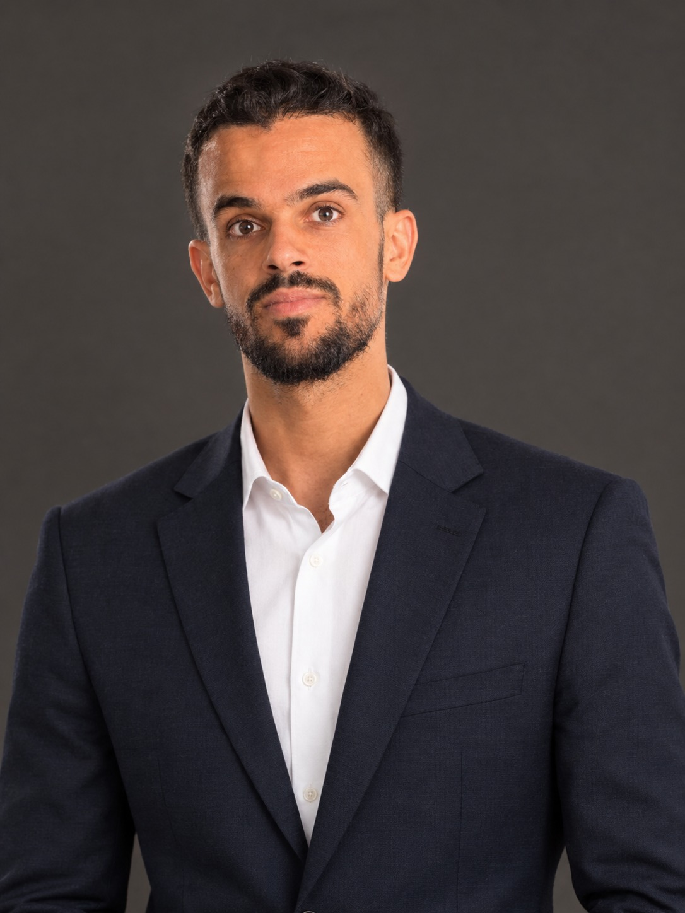

01
إدارة قواعد البيانات
فهم وتنظيم قواعد البيانات ضمن بيئات أنظمة المعلومات.
خريج إعلام آلي — تخصص أنظمة المعلومات، بخلفية تقنية في تحليل وتصميم أنظمة المعلومات، قواعد البيانات، تطوير البرمجيات وإدارة البيانات، مع اهتمام بالدقة والعمل الجماعي والتعلم المستمر.

هوية مهنية مبنية على المعرفة التقنية، التنظيم، المسؤولية والرغبة في التطور المستمر.
حاصل على شهادة الليسانس في الإعلام الآلي، تخصص أنظمة المعلومات. تكوين أكاديمي يشمل تحليل وتصميم قواعد البيانات، تطوير البرمجيات، إدارة شبكات وبنية أنظمة المعلومات ومعالجة البيانات.
أسعى لاستغلال مهاراتي البرمجية والتنظيمية ضمن فريق عمل طموح، مع التركيز على دقة الإنجاز، المسؤولية والتعلم المستمر.
المهارات التالية مستخرجة من السيرة الذاتية، دون إضافة تقنيات غير مذكورة فيها.
فهم وتنظيم قواعد البيانات ضمن بيئات أنظمة المعلومات.
تحليل احتياجات الأنظمة وتصميم الحلول ضمن إطار أنظمة المعلومات.
خلفية أكاديمية وتقنية في تطوير البرمجيات وبناء الحلول.
التعامل مع البيانات وتنظيمها ومعالجتها ضمن النظام.
التعامل المنهجي مع المشكلات التقنية والبحث عن حلول عملية.
تحويل المعرفة الأكاديمية إلى مساهمة عملية داخل بيئة عمل منظمة ومتعاونة.
المساهمة في تحليل وتصميم وإدارة أنظمة المعلومات.
تنظيم وإدارة وتغذية البيانات ضمن الحلول المعلوماتية.
المشاركة في تطوير حلول برمجية انطلاقاً من المتطلبات.
معرفة أكاديمية بإدارة شبكات وبنية أنظمة المعلومات.
الجانب الشخصي والمهني الذي يكمّل المعرفة التقنية.
مرونة عالية في العمل والاندماج السريع مع فرق العمل المختلفة.
الحرص على تقديم مخرجات ذات جودة عالية ودقة في التفاصيل.
الالتزام بالمهام والمواعيد والواجبات المهنية بانضباط.
الرغبة في تطوير المعرفة والمهارات وتحسين بيئة العمل.
للتواصل المهني يمكنك استخدام الهاتف أو البريد الإلكتروني بعد استبدال البريد أدناه بالبريد الحقيقي.
abdoudidoou3@gmail.com ↗